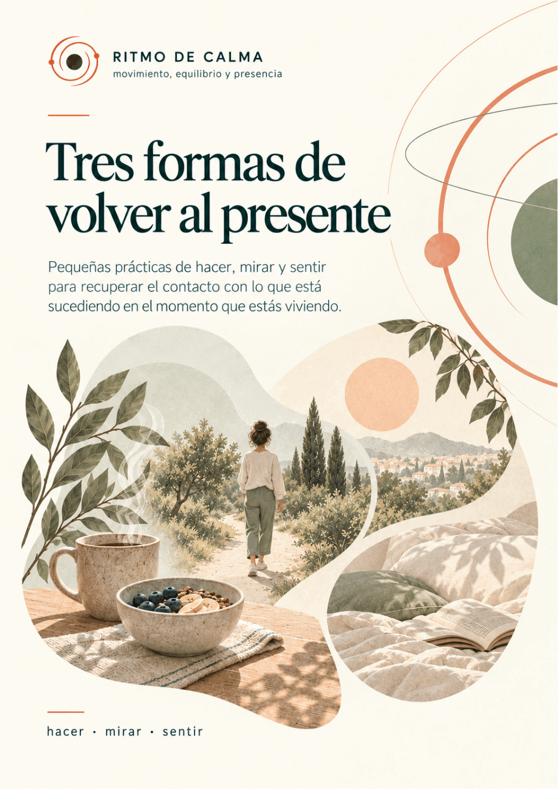

Explorar / Recursos
Recurso 02 · PDF · 6 páginas
Recurso · PDF
Tres formas de volver al presente
Pequeñas prácticas para recuperar contacto con aquello que está sucediendo en el momento que estás viviendo.
Tres formas concretas de recuperar presencia en la vida cotidiana: hacer · mirar · sentir.
